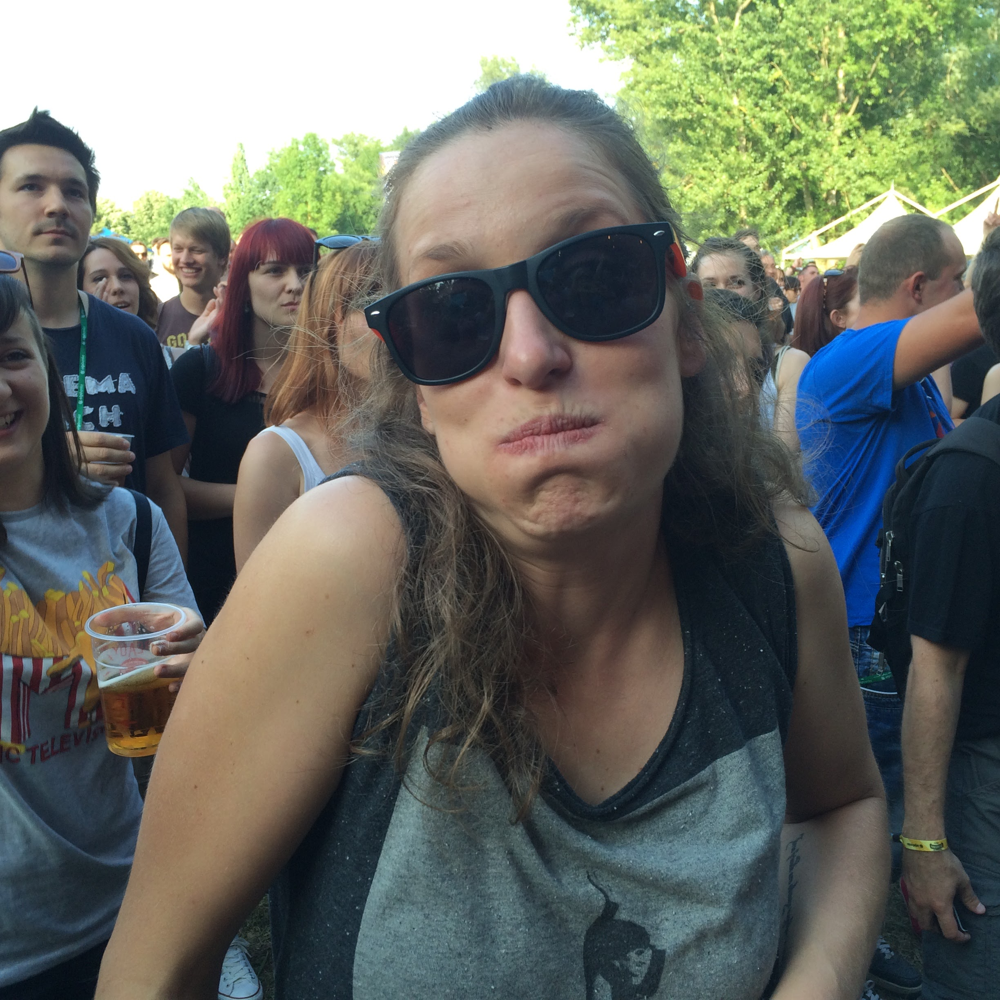

Full Stack Web Developer & Anthropologist
Tea Škvarč
Full Stack Web Developer & Anthropologist
*currently unemployed and seeking for job*
language

Language
Slovenia
English
Croatian
keyboard_arrow_up